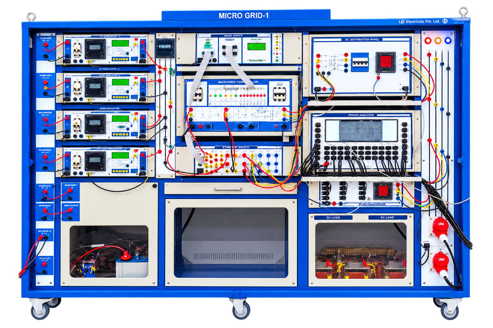

Core Testbed · Lab Setup

🔍 Enlarge PhotoMicro Grid — 1
Central testbed featuring solar and wind generation, Li-ion battery storage, supercapacitor storage, DC bus, DC-DC conversion and bidirectional buck-boost conversion with measurement and control.
- › Solar energy generation
- › Wind energy generation
- › Li-ion battery energy storage
- › Supercapacitor energy storage
- › DC-DC power conversion
- › Bidirectional buck-boost conversion
- › DC bus operation
- › Power measurement & monitoring
- › Grid interfacing